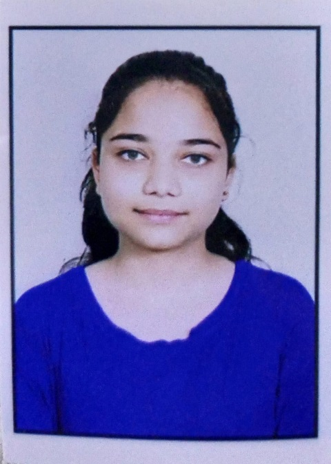

Ishika

Summary
Creative and highly motivated science graduate. Exploring and learning new skills. Determined and dedicated toward my work. Progress and self development is my main objective.
Education
- B. Sc (life sciences) Sri venkateshwara college, Delhi University
Work Experience
- CONTENT WRITER (Digital Ally)
12/2022 - 03/2023
- Writing and updating website content
- Proofreading and editing content
- writing blogs, posts, and descriptions for clients
- CONTENT WRITER (Silverline dreams creation OPC Pvt Ltd.)
09/2022 - 10/2022
- Writing short stories for publishing house
- Writing episodes for their web series
- CONTENT WRITER (SEO Mantra)
07/2021 - 08/2021
- Writing engaging articles for their linkedin account
- writing engaging posts for their social media accounts
- CONTENT WRITER (Top Trove Foundation)
06/2021 - 07/2021
- writing engaging posts
- writing blogs for them
- BUSINESS DEVELOPER (JMES)
05/2021 - 06/2021
- maximize their business reach
- raising fund for them
- promoting their campaign
- SOCIAL MEDIA SPECIALIST (Ad Just Thing)
03/2021 - 04/2021
- Maximized Social media reach of account by 150%
- Promoted account on different platform and followers gain was 130%
Skills
- Content Writing Creative Writing: ⭐⭐⭐⭐
- Community Management Analytical Skills: ⭐⭐⭐
- Social media management Business Development: ⭐⭐⭐
- Problem solving MS Word MS Power point: ⭐⭐⭐⭐
- Non-technical writing: ⭐⭐⭐
Languages
- English
(Full Professional Proficiency)
- Hindi
(Native or Bilingual Proficiency )
Others